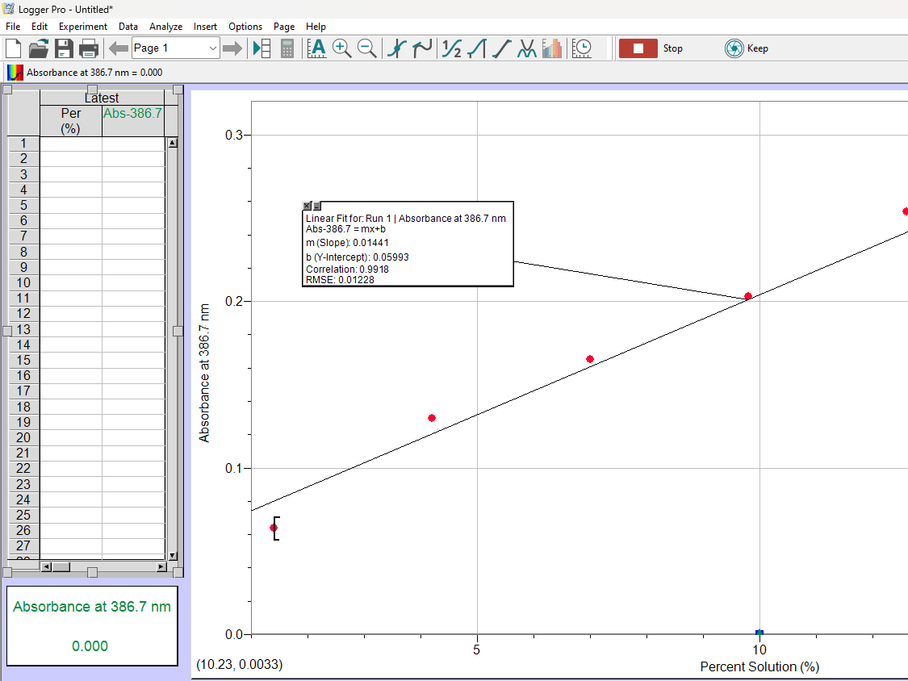
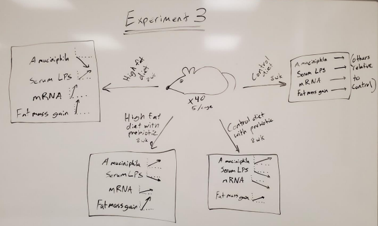
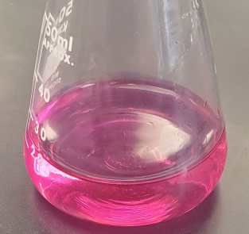
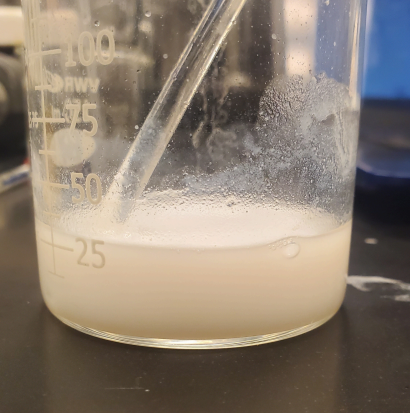
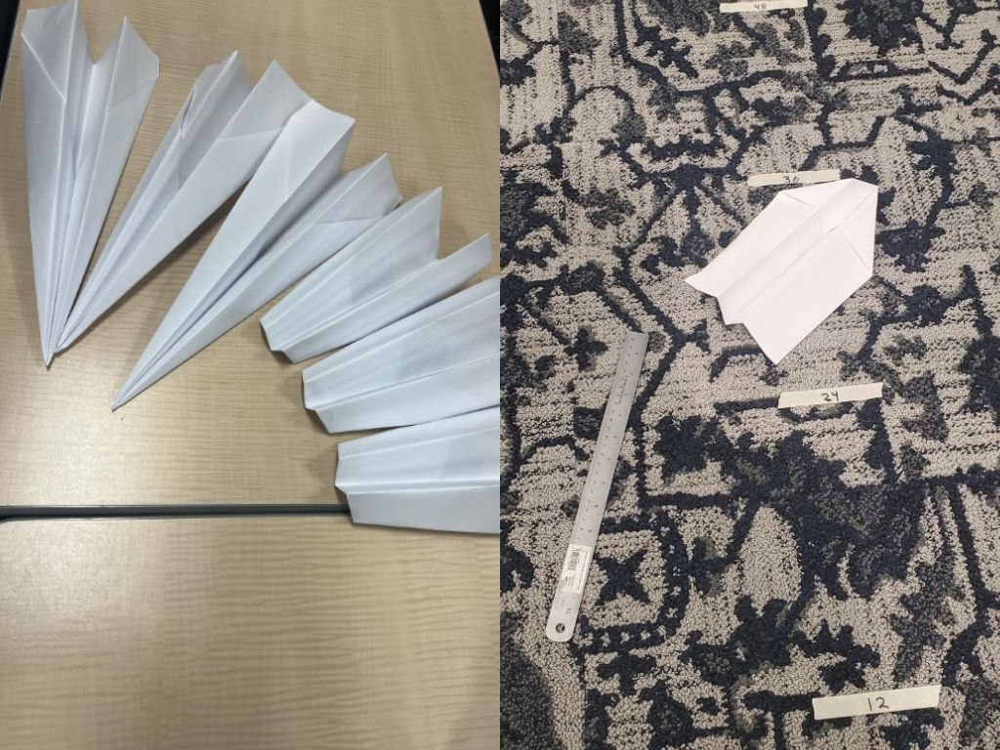
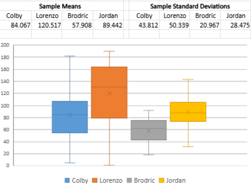
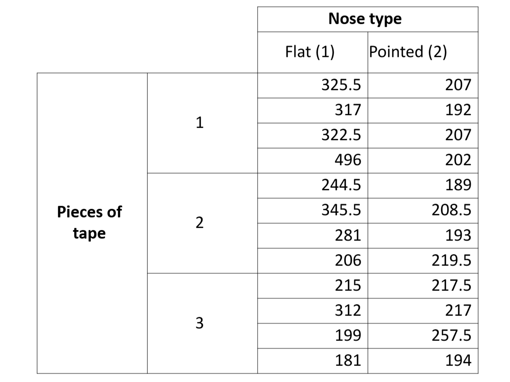

Biology Labs
Labs involving concentration, macromolecules, enzyme kinetics, and scientific literature



Chemistry Labs
Labs involving chemical reactions, spectroscopy, titrations, and more



Statistics Projects
Statistical analysis from two experiments of paper airplanes distance flown


